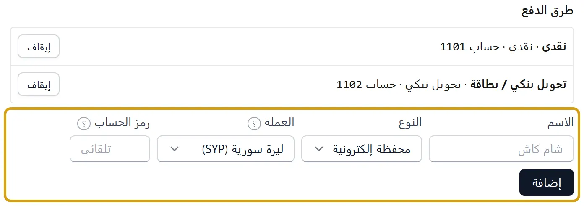
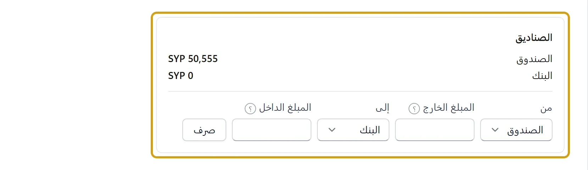
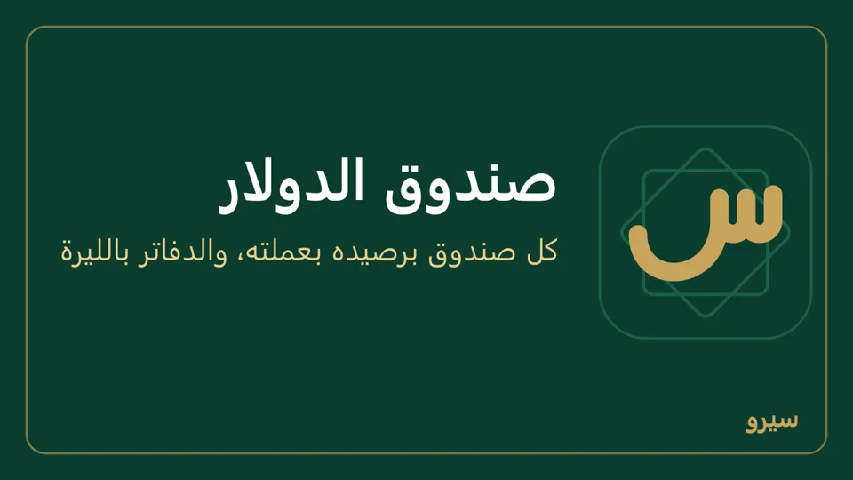

صندوق الدولار
محل يحفظ الليرات في صندوق والدولارات في آخر: كل صندوق يُرى رصيده بعملته («صندوق الدولار: 350 $»)، ودفتر حسابه في المحاسبة فيه عمود بالدولار بجانب الليرات. سند صندوق الدولار لا يُعدَّل: يُلغى ثم يُسجَّل من جديد.
- أضف الدولار أولاً إلى العملات المستعملة إن لم يكن فيها. ثم الإعدادات ← نقطة البيع: اكتب الاسم (صندوق الدولار)، النوع نقدي والعملة دولار أمريكي (USD)، ثم إضافة.


- اكتب سعر الدولار كل يوم: أسعار الصرف.
- ما في الصندوق من دولارات اليوم: سطر في الأرصدة الافتتاحية من Excel برمز حساب صندوق الدولار والمبلغ بالدولار (300 مثلاً). على الجوال: الصندوق ← رأس مال / نقد أول المدة والمبلغ بالدولار. (أو قيد يدوي واختر عملة القيد الدولار: كيف.)
- بيع بالدولار: في نقطة البيع اكتب الدولارات في خانة صندوق الدولار؛ إن دفع الزبون أكثر من الفاتورة يُرَدّ الباقي بالليرة من الصندوق السوري.
- قبض أو دفع بالدولار: خانة الصندوق في صفحة الزبون أو المورد عند القبض والدفع.
- تصريف بين الصندوقين: الصناديق أسفل نقطة البيع. عند بيع دولارات يُسجَّل الفرق عن كلفتها ربح صرف أو خسارته. بعده يظهر «تم الصرف … مقابل …» بالسعر الذي خرج منه وسعر اليوم. وتحت الزر آخر التحويلات بين الصناديق: كل صرف أو نقل بتاريخه، من أي صندوق إلى أي صندوق، وما خرج وما دخل كلٌّ بعملته، ورقم قيده لتفتحه أو تلغيه. وهي نفسها في الصرافة والحوالات، وعلى الجوال في الصندوق تحت صرف بين الصندوقين. وإن ابتعد سعرك عن سعر اليوم أكثر من الخُمس (صفر زائد أو ناقص) يسألك قبل الصرف.


- محل صرافة وحوالات: فعّل قسم الصرافة والحوالات: أسعار شراء ومبيع لكل عملة، وصرف بسعرها، وسجل الحوالات (الصرافة والحوالات).
- نقل بين صندوقين بالعملة نفسها (من درج البيع إلى الخزنة، أو من الصندوق إلى البنك أو شام كاش): في الصناديق أسفل نقطة البيع (فيها الصناديق وكل طرق الدفع الأخرى: البنك، شام كاش…) اختر من وإلى، واكتب المبلغ نفسه في المبلغ الخارج والمبلغ الداخل، ثم صرف. ينتقل المبلغ بين الحسابين بلا ربح ولا خسارة. وبين عملتين أجنبيتين مباشرة (يورو إلى دولار مثلاً): اختر صندوق اليورو في من وصندوق الدولار في إلى، واكتب اليورو الخارج والدولار الداخل، ثم صرف، وللعملة الداخلة سعر اليوم في أسعار الصرف. على الجوال: الصندوق ← صرف بين الصندوقين: اختر من وإلى بين كل الصناديق والبنك وشام كاش، واكتب المبلغ الخارج، ثم المبلغ الداخل إن كانت العملتان مختلفتين (يقترحه بسعر اليوم)، ثم تسجيل الصرف. بالعملة نفسها لا خانة للداخل: ينتقل المبلغ نفسه.
- صرف أو نقل خاطئ: افتح قيده من دفتر أحد الصندوقين في المحاسبة، واضغط إلغاء السند (أو إلغاء القيد)، واكتب سبب الإلغاء ثم تأكيد الإلغاء: يُسجَّل قيد عكسي ويعود المبلغان كما كانا، ثم اصرف من جديد.

- صندوق دولار ثانٍ (دولارات المحل ودولارات الشريك، أو صندوق لكل فرع): أضفه كالأول باسم آخر (الإعدادات ← نقطة البيع، على الجوال الإعدادات ← طرق الدفع بالنوع نقدي والعملة). في فاتورة بالدولار نقدي يدخل الصندوق الأول، والثاني يظهر باسمه في طريقة الدفع (على الجوال بجانب نقدي وآجل).
الصندوق نفسه يصلح لأي عملة من العملات المستعملة: ليرة تركية، دينار، درهم… كل صندوق بعملته.
كل مبلغ بالدولار يُسجَّل في الدفاتر بالليرة بسعر يومه، فتبقى الأرباح والميزانية بعملة واحدة. والدولارات تخرج من الصندوق (دفع لمورد، مصروف، سحب، باقٍ أو مرتجع) بكلفتها فيه كما كان في تاريخ الحركة، والفرق عن سعر يومها ربح صرف أو خسارته في «فروق صرف»، فالصندوق الفارغ رصيده صفر بالليرة أيضاً. وما يخرج أكثر مما في الصندوق يخرج بسعر يومه. إعادة التقييم آخر الشهر تشمل صندوق الدولار ولا تغيّر عدد دولاراته. سند الدولار الخاطئ يُلغى ثم يُسجَّل من جديد.
على الجوال: الصندوق ← إضافة صندوق دولار أو عملة أخرى واختر العملة، وسعر اليوم في الصندوق ← سعر دولار أمريكي اليوم. ما فيه الآن: رأس مال / نقد أول المدة واختر صندوق الدولار. في بيع بالكاميرا زر دفع بالدولار، وفي القبض والدفع والمصروف اختر صندوق الدولار واكتب المبلغ بالدولار. التصريف: صرف بين الصندوقين.